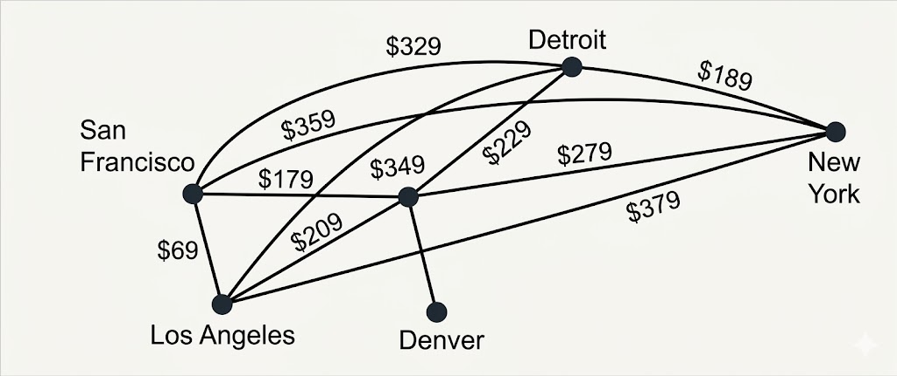

B.Tech. IV Semester
Examination, December 2024
Grading System (GS)
Max Marks: 70 | Time: 3 Hours
Note:
i) Answer any five questions.
ii) All questions carry equal marks.
a) Let A be the set of even numbers between 10 and 20, and B be the set of multiples of 5 between 15 and 35. If $a$ is an even number from set A, and $b$ is a multiple of 5 from set B, find the set of ordered pairs such that '$a$' is a factor of '$b$' and $a$ is less than $b$. (Unit 1)
b) Consider the relation R on the set of integers Z defined by aRb if and only if $a^2 - b^2$ is divisible by 4. Determine the common relations on Z that are the transitive closures of R. (Unit 1)
a) Suppose that the relation R is irreflexive. Is $R^2$ necessarily irreflexive? Give a reason for your answer. (Unit 1)
b) Solve the recurrence relation $a_n = a_{n-1} + 6a_{n-2}$ given the initial conditions $a_0 = 3$ and $a_1 = 6$. (Unit 1)
a) Prove that a subgroup H of a group G is normal if and only if $xHx^{-1} = H, \forall x \in G$. (Unit 2)
b) Let G = {0, 1, 2, 3, 4, 5} with addition modulo 6. Is G a group? Justify your answer. (Unit 2)
a) Construct a niche overlap graph for six species of birds, where the hermit thrush competes with the robin and with the blue jay, the robin also competes with the mockingbird, the mockingbird also competes with the blue jay, and the nuthatch competes with the hairy wood-pecker. (Unit 4)
b) Let $p$ and $q$ be the propositions
$p$ : It is below freezing.
$q$ : It is snowing.
Write these propositions using $p$ and $q$ and logical connectives (including negations).
i) It is below freezing and snowing.
ii) It is below freezing but not snowing.
iii) It is not below freezing and it is not snowing.
iv) It is either snowing or below freezing (or both).
v) If it is below freezing, it is also snowing.
vi) Either it is below freezing or it is snowing, but it is not snowing if it is below freezing.
vii) That it is below freezing is necessary and sufficient for it to be snowing.
(Unit 3)
a) Find a route with the least total airfare that visits each of the cities in this graph, where the weight on an edge is the least price available for a flight between the two cities.

(Unit 4)
b) Given a matrix F with SVD $F = U\Sigma V^T$, where:
$$U = \begin{pmatrix} 1 & 0 \\ 0 & 1 \end{pmatrix}, \Sigma = \begin{pmatrix} 2 & 0 \\ 0 & 3 \end{pmatrix}, V = \begin{pmatrix} 1 & 0 \\ 0 & 1 \end{pmatrix}$$
Find the original matrix F. (Unit 5)
a) Find the Determinant and trace of the matrix:
$$\begin{pmatrix} 2 & -1 & 0 \\ 3 & 4 & 2 \\ 1 & 0 & -3 \end{pmatrix}$$ (Unit 5)
b) Using Cholesky decomposition, Verify that whether the following matrix is positive definite or not. (Unit 5)
a) Write a detail note on Analysis of Variance. (Unit 5)
b) A sample of 100 B.Sc. Student is taken from a medical college with height having standard deviation (S.D.= 10 cm). The mean height of sample of student is found 168.8 cm. Can we accept that the mean height of student is 170 cm. Justify your answer. (Unit 5)
Write short note on any two:
a) Type-I and Type-II Errors (Unit 5)
b) Eigen decomposition (Unit 5)
c) Abelian group and cyclic group (Unit 2)